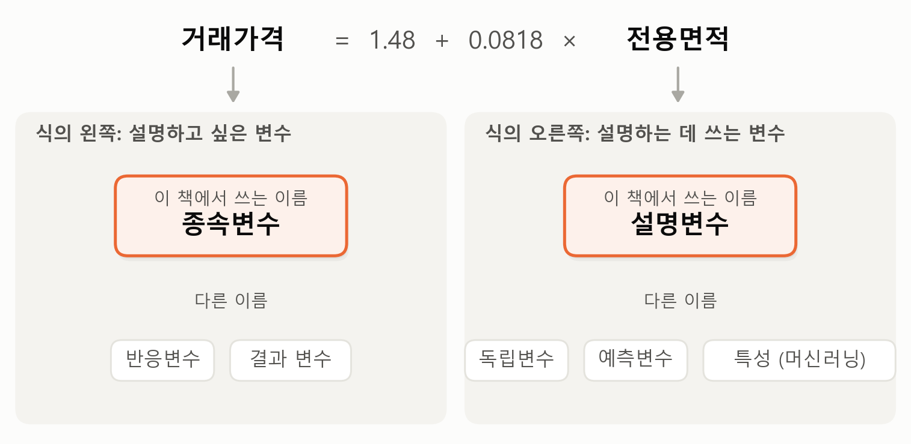
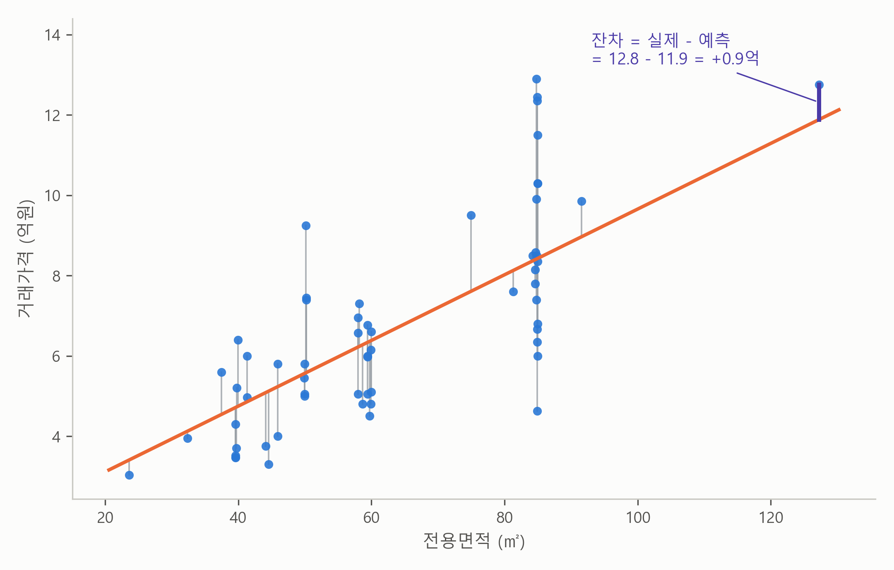
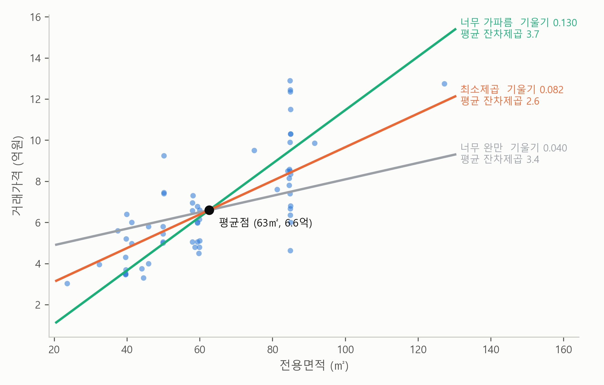

2. 직선은 어떻게 정해지나 — 잔차와 최소제곱#
이 장 첫머리의 보고서가 내놓은 회귀 결과는 한 줄짜리 식이었습니다.
거래가격(억원) = 1.48 + 0.0818 × 전용면적(㎡)
식의 왼쪽에 놓인 거래가격처럼, 우리가 설명하고 싶은 변수를 종속변수(dependent variable)라고 하고, 오른쪽에 놓인 전용면적처럼, 그것을 설명하는 데 쓰는 변수를 설명변수(explanatory variable)라고 합니다. 거래가격이 전용면적에 따라 달라진다고 보는 것이죠. 종속변수는 반응변수나 결과 변수, 설명변수는 독립변수나 예측변수라고도 부릅니다. 머신러닝에서는 설명변수를 흔히 특성(feature)이라고 부르는데, 예측에 쓰는 대상의 성질 하나하나라는 뜻입니다. 이 책에서는 종속변수와 설명변수로 씁니다.
그림 2-1은 이 이름들을 한데 모은 것입니다.

그림 2-1. 종속변수와 설명변수, 그리고 그 다른 이름들.
그림에서 보듯이 식의 왼쪽에 놓이는 변수가 종속변수, 오른쪽에 놓이는 변수가 설명변수입니다. 책이나 분야에 따라 이름이 달라도 가리키는 것은 같으니, 다른 이름을 만나면 이 그림의 어느 쪽인지만 떠올리면 됩니다.
보고서의 그림에는 7,366개의 점 사이로 주황색 직선 하나가 지나갑니다. 그런데 이 직선은 누가 그었을까요? 점들이 넓게 흩어져 있으니 직선을 긋는 방법은 무수히 많습니다. AI는 그중 왜 하필 이 직선을 “결과”라고 내놓았을까요? 적당히 눈대중으로 그은 걸까요?
미리 답부터 말하면, 이 직선은 시합의 우승자입니다. 가능한 모든 직선끼리 시합을 붙여서, 이긴 직선 하나를 보고서에 적은 겁니다. 이 절은 그 시합의 규칙을 설명합니다. 규칙은 짧습니다 — 빗나감을 측정하고, 제곱해서 더하고, 그 합이 가장 작은 직선을 고른다. 절이 끝나면 보고서의 식이 그냥 숫자가 아니라 우승자의 이름표로 보일 겁니다.
일기예보의 채점표#
시합의 규칙에 들어가기 전에, “직선이 하는 일이 예측”이라는 것부터 아주 익숙한 예로 확인해 보죠. 일기예보입니다. 두 방송사가 내일 낮 기온을 예측합니다. A 방송은 25도, B 방송은 28도라고 했는데, 다음 날 실제 기온은 27도였습니다. A 방송은 2도 낮게, B 방송은 1도 높게 빗나갔죠. 예측이니까 빗나가는 것은 당연합니다. 중요한 것은, 빗나간 거리를 측정할 수 있다는 겁니다. 이것을 한 달 내내 기록해서 빗나간 만큼 벌점을 주고 합산하면, 어느 방송의 예보가 더 좋은지 숫자 하나로 가릴 수 있습니다. 이것이 이 절 전체를 꿰는 한 문장입니다.
예측의 실력은 빗나감을 모아서 측정한다.
그런데 직선도 하는 일이 똑같이 예측입니다. 전용면적을 넣으면 가격을 내놓는 예측 기계거든요. 그러니 직선들의 실력도 방송사 예보처럼 가릴 수 있습니다. AI가 한 일이 바로 이겁니다. 가능한 모든 직선에게 노원구 아파트 매매 7,366건 전체로 시합을 붙여서, 벌점 합이 가장 작은 직선을 공표한 것입니다. 이제 그 시합을 우리가 직접 치러 보죠.
직선의 빗나감을 측정하는 법 — 잔차#
기온에서 했던 것처럼, 집값에서도 빗나간 거리를 측정해 보겠습니다. 먼저 식에 숫자를 넣어 봅니다. 전용 84㎡를 넣어 계산해 보면 1.48 + 0.0818 × 84 ≈ 8.35, 약 8.3억쯤 하겠다는 예측입니다. 그런데 실제 거래가 정확히 직선 위에 떨어지는 일은 거의 없습니다. 그림 2-2의 맨 오른쪽, 보라색으로 강조한 거래를 보죠. 전용 127㎡ — 직선의 예측은 11.9억인데 실제로는 12.8억에 팔렸습니다. 직선이 0.9억 빗나간 겁니다. 기온으로 치면 2도 빗나간 것과 똑같은 일이죠. 이 빗나감을 잔차(residual)라고 부릅니다.
잔차 = 실제 가격 − 직선의 예측
그림에는 노원구 거래 중 60건만 추려 잔차를 전부 그렸습니다. 점이 직선보다 위에 있으면 잔차는 양수(실제 가격이 직선의 예측보다 높다는 뜻), 아래면 음수입니다. 직선이 아무리 잘 그어져도 잔차는 남습니다. 같은 면적이라도 단지, 층, 연식이 다르니까요.

그림 2-2. 점 하나하나와 직선 사이의 세로 거리가 잔차다. 보라색으로 강조한 맨 오른쪽 거래(전용 127㎡)는 직선의 예측(11.9억)보다 0.9억 비싸게 팔렸다. (노원구 7,366건 중 무작위 60건)
왜 제곱해서 더하나#
직선들끼리 시합을 붙이려면, 수천 개의 잔차를 벌점 하나로 요약해야 합니다. 그냥 더하면 될까요? 안 됩니다. 일기예보로 돌아가 보죠. 어떤 방송이 하루는 2도 높게, 다음 날은 2도 낮게 빗나갔다면, 둘을 더한 값은 0입니다. 집값도 똑같습니다. 위로 0.9억 빗나간 거래와 아래로 0.9억 빗나간 거래를 더하면 0이 되어, 많이 빗나간 직선이 완벽한 직선처럼 보이게 됩니다.
그래서 잔차를 제곱해서 더합니다. 제곱은 두 가지 일을 합니다.
부호를 없앱니다. 위로 빗나가든 아래로 빗나가든 똑같이 벌점이 됩니다.
큰 빗나감에 훨씬 큰 벌점을 줍니다. 1억 빗나가면 벌점 1, 3억 빗나가면 벌점 9 — 3배가 아니라 9배입니다. 직선 하나가 전체를 요약하려면 어느 한 곳에서 크게 틀리는 것을 특히 피해야 하기 때문입니다.
한 줄로 정리하면, 제곱은 부호를 지우고 큰 빗나감을 크게 벌합니다. 2억 빗나가면 벌점 4, 4억 빗나가면 벌점 16. 빗나감이 2배가 되면 벌점은 4배가 됩니다.
후보들을 겨루게 하면#
이제 직선들끼리 시합을 붙일 수 있습니다. 그 전에 일거리를 하나 줄여 두죠. 기울기(slope)를 어떤 값으로 정하든, 직선의 높이(절편, intercept)는 자동으로 따라옵니다 — 주어진 기울기에서 잔차 제곱합을 가장 작게 하는 높이는 언제나 직선이 평균점, 즉 (평균 면적, 평균 가격)을 지나게 하는 것입니다. 노원구에서는 (63㎡, 6.6억)입니다. 보고서의 직선도 실제로 이 점을 지납니다. 그러니 시합은 기울기 대결입니다.
그림 2-3은 평균점에 핀을 꽂고 기울기만 다르게 한 세 선수입니다. 너무 완만한 직선(기울기 0.040)은 큰 평수의 가격을 한참 낮게 예측해서 평균 잔차제곱이 3.4, 너무 가파른 직선(0.130)은 반대로 작은 평수에서 크게 틀려 3.7입니다. 기울기 0.082가 2.6으로 가장 작습니다. 평균 잔차제곱이 2.6이라는 것은 거래 한 건당 평균 2.6씩 벌점이 남았다는 뜻입니다. 세 선수 가운데 가장 적게 빗나간 직선이죠.

그림 2-3. 평균점을 지나며 기울기만 다른 세 직선. 완만하면 오른쪽에서, 가파르면 왼쪽에서 크게 빗나간다. 평균 잔차제곱이 가장 작은 것은 주황 직선이다.
세 선수만 시합할 이유가 없죠. 직선을 평균점에 꽂은 채 완만한 쪽에서 가파른 쪽으로 천천히 돌려 보면, 가능한 모든 기울기가 차례로 시합을 치르는 셈입니다. 돌리는 동안 평균 잔차제곱은 내려가다가, 어느 지점에서 바닥을 찍고, 다시 올라갑니다. 그 바닥이 기울기 0.0818, 보고서의 그 숫자입니다. AI가 적당히 고른 수가 아니라, 가능한 모든 직선 가운데 벌점이 가장 작은 우승자인 거죠. 그 우승자가 보고서의 “가격 = 1.48 + 0.0818 × 면적”입니다.
잔차 제곱합이 최소인 직선을 고른다 — 그래서 이 규칙의 이름이 최소제곱법(least squares)입니다. 처음 들으면 어려운 이름이지만, 뜻은 방금 본 그대로입니다. 빗나감의 제곱을 모은 벌점이 최소인 직선이라는 말이니까요. AI에게 회귀분석을 해 달라고 하면, AI는 이 규칙으로 찾은 직선의 기울기와 절편을 보고하는 것입니다.
요약 — 이 절의 물음과 답
직선은 무수히 그을 수 있는데, 보고서의 직선은 누가 그었을까? 눈대중으로 그은 것이 아니다. 가능한 모든 직선끼리 시합을 붙여, 빗나감의 벌점 합이 가장 작은 직선을 고른 것이다. 기울기 0.0818은 AI가 적당히 고른 수가 아니라 그 우승자의 기울기다.
빗나감은 어떻게 재고, 왜 제곱해서 더하나? 실제 가격에서 직선의 예측을 뺀 빗나감을 잔차라고 한다. 잔차를 그냥 더하면 위로 빗나간 것과 아래로 빗나간 것이 서로 지워지므로, 제곱해서 부호를 지우고 큰 빗나감에 훨씬 큰 벌점을 준다. 이렇게 잔차 제곱합이 최소인 직선을 고르는 규칙을 최소제곱법이라고 한다.
남는 질문#
이 직선이 시합의 우승자라는 것까지 왔습니다. 그런데 우승자라는 것과 믿을 만하다는 것은 다른 문제입니다. 우리가 가진 것은 최근 1년의 거래일 뿐입니다. 다른 1년이었다면, 최소제곱이 찾은 기울기도 0.0818이 아닌 다른 값이었겠죠. 얼마나 다를까요? 보고서의 “표준오차”와 “95% 신뢰구간”이 바로 그 답입니다. 다음 절에서 다룹니다.